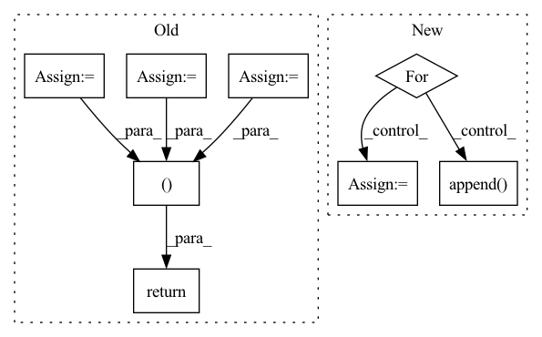

Pattern ID :3117
Before Change
shape = x.shape
n, c, h, w = shape
if c == 1:
x = x.expand(1, 3, 1, 1)
hPad = max(0, 32 - h)
wPad = max(0, 32 - w)
x = F.pad(x, (0, wPad, 0, hPad))
return self._quantizer(self._encoder(x)), torch.tensor([h, w], dtype=torch.int)
class RefDecoder(nn.Module):
def __init__(self, m, k, channel):After Change
def forward(self, x: torch.Tensor) -> List[torch.LongTensor]:
codes = list()
latent = self._encoder(x)
for i in range(self._levels):
head = self._heads[i]
z = head(latent)
if i < self._levels - 1:
mapper = self._mappers[i]
latent = mapper(latent)
code = self._quantizers[i](z)
hard = self._deQuantizers[i](code)
latent = latent - hard
else:
code = self._quantizers[i](z)
codes.append( code)
return codes
class RefDecoder(nn.Module):In pattern: SUPERPATTERN
Frequency: 3
Non-data size: 8
Instances Fragment ID: 16773119
Project Name: xiaosu-zhu/mcquic
Commit Name: 3ca26f40dc8d00ed5fbebee4a77654f9d1d51939
Time: 2021-10-08
Author: xiaosu.zhu@outlook.com
File Name: src/mcqc/evaluation/refModel.py
M Class Name: RefEncoder
N Class Name: RefEncoder
M Method Name: forward(2)
N Method Name: forward(2)
M Parent Class: nn.Module
N Parent Class: nn.Module
M File Name: src/mcqc/evaluation/refModel.py
N File Name: src/mcqc/evaluation/refModel.py
M Start Line: 106
M End Line: 114
N Start Line: 136
N End Line: 150
Before Change
def forward(self, x):
out1 = self.mpd1(x)
out2 = self.mpd2(x)
out3 = self.mpd3(x)
out4 = self.mpd4(x)
out5 = self.mpd5(x)
return out1, out2, out3, out4, out5
After Change
def forward(self, x):
scores, feats = self.msd(x)
for key, disc in enumerate(self.discriminators):
score, feat = disc(x)
scores.append( score)
feats.append(feat)
return scores, feats
Fragment ID: 16773118
Project Name: coqui-ai/tts
Commit Name: 7b7c5d635fc42be520f86524c6d3c79d7ef48d39
Time: 2021-04-08
Author: rishikksh20@gmail.com
File Name: TTS/vocoder/models/hifigan_mpd_discriminator.py
M Class Name: MPD
N Class Name: HiFiDiscriminator
M Method Name: forward(2)
N Method Name: forward(2)
M Parent Class: nn.Module
N Parent Class: nn.Module
M File Name: TTS/vocoder/models/hifigan_mpd_discriminator.py
N File Name: TTS/vocoder/models/hifigan_mpd_discriminator.py
M Start Line: 46
M End Line: 51
N Start Line: 62
N End Line: 67
Before Change
// im branch
x = input
for i, up_conv in enumerate(self.up_convs):
before_pool = None
if encoder_outs is not None:
before_pool = encoder_outs[-(i+2)]
x = up_conv(x, before_pool,se=self.im_atts[i])
x_im = x
x = input
for i, up_conv in enumerate(self.up_convs):
before_pool = None
if encoder_outs is not None:
before_pool = encoder_outs[-(i+2)]
x = up_conv(x, before_pool, se = self.mask_atts[i])
x_mask = x
x = input
for i, up_conv in enumerate(self.up_convs):
before_pool = None
if encoder_outs is not None:
before_pool = encoder_outs[-(i+2)]
x = up_conv(x, before_pool, se=self.wm_atts[i])
x_wm = x
return x_im,x_mask,x_wm
class CoarseDecoder(nn.Module):
def __init__(self, args, in_channels=512, out_channels=3, norm="bn",act=F.relu, depth=5, blocks=1, residual=True,
After Change
im_encoder_outs = []
mask_encoder_outs = []
x = input
for i, d_conv in enumerate(self.down_convs):
// d_conv, attn = nets
x, before_pool = d_conv(x)
im_encoder_outs.append(before_pool)
mask_encoder_outs.append( before_pool)
x_im = x
x_mask = x
Fragment ID: 16773085
Project Name: bcmi/slbr-visible-watermark-removal
Commit Name: 43e84b70895d28955496122816e50857863e5bfd
Time: 2022-01-04
Author: lj200820082007@163.com
File Name: src/networks/resunet.py
M Class Name: SharedDecoder
N Class Name: SharedBottleNeck
M Method Name: forward(2)
N Method Name: forward(3)
M Parent Class: nn.Module
N Parent Class: nn.Module
M File Name: src/networks/resunet.py
N File Name: src/networks/resunet.py
M Start Line: 86
M End Line: 112
N Start Line: 84
N End Line: 114
Before Change
shape = x.shape
n, c, h, w = shape
if c == 1:
x = x.expand(1, 3, 1, 1)
hPad = max(0, 32 - h)
wPad = max(0, 32 - w)
x = F.pad(x, (0, wPad, 0, hPad))
return self._quantizer(self._encoder(x)), torch.tensor([h, w], dtype=torch.int)
class RefDecoder(nn.Module):
def __init__(self, m, k, channel):After Change
def forward(self, x: torch.Tensor) -> List[torch.LongTensor]:
codes = list()
latent = self._encoder(x)
for i in range(self._levels):
head = self._heads[i]
z = head(latent)
if i < self._levels - 1:
mapper = self._mappers[i]
latent = mapper(latent)
code = self._quantizers[i](z)
hard = self._deQuantizers[i](code)
latent = latent - hard
else:
code = self._quantizers[i](z)
codes.append( code)
return codes
class RefDecoder(nn.Module): Fragment ID: 16773114
Project Name: xiaosu-zhu/mcquic
Commit Name: 3ca26f40dc8d00ed5fbebee4a77654f9d1d51939
Time: 2021-10-08
Author: xiaosu.zhu@outlook.com
File Name: src/mcqc/evaluation/refModel.py
M Class Name: RefEncoder
N Class Name: RefEncoder
M Method Name: forward(2)
N Method Name: forward(2)
M Parent Class: nn.Module
N Parent Class: nn.Module
M File Name: src/mcqc/evaluation/refModel.py
N File Name: src/mcqc/evaluation/refModel.py
M Start Line: 106
M End Line: 114
N Start Line: 136
N End Line: 150